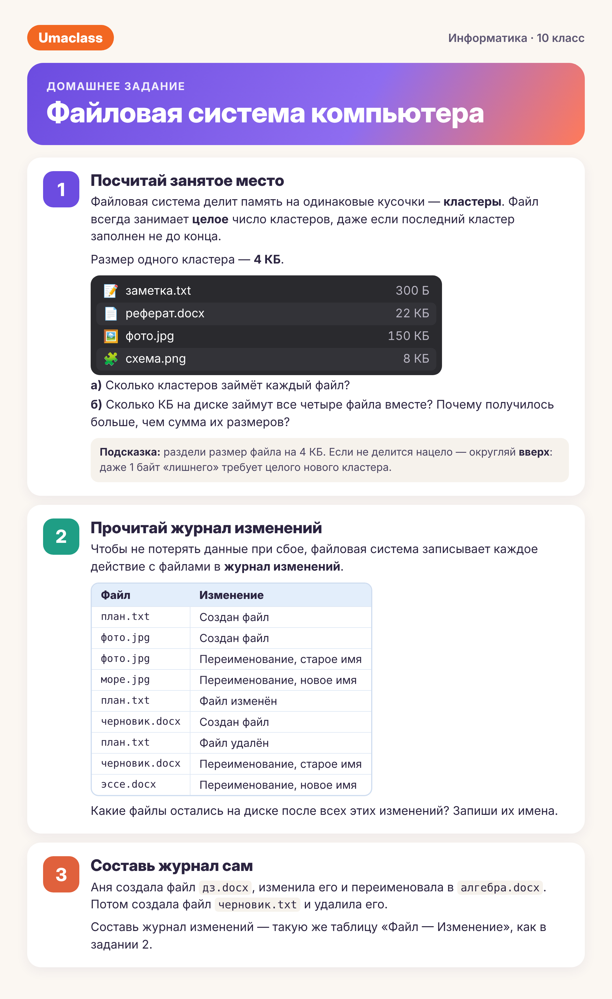

Информатика · 10 класс
📂 Учимся находить любой файл по его адресу — на компьютере и в телефоне
Ассаляму аляйкум, ребята!
رَبِّ زِدْنِي عِلْمًا
«Рабби зидни ‘ильман»
Смысл: «Господи! Приумножь мои знания!»
(смысл 114 аята суры «Та-Ха»)
👩🏫 Учитель: «Пришли, пожалуйста, своё сочинение».
Открываешь «Загрузки» — а там вот это. Какой из файлов нужный?
🤔 А компьютер никогда не путает файлы. Как он их различает?
Тема урока
✔ записать полный путь к любому файлу
✔ найти файл по его пути
✔ посчитать, сколько места файл займёт на диске
А потом — практическая работа «Путь к файлу» 💻
💡 По расширению компьютер понимает, какой программой открыть файл. Расширение — это всё, что после последней точки.
Что внутри? Угадайте — и нажмите
🗄️ Шкаф → 📚 полка → 📦 коробка → 🧣 шарф
💾 Диск → 📁 папка → 📁 папка → 📄 файл
C:\👈 Нажмите на любой файл или папку в дереве:
\, в Android, macOS, Linux — косая черта /🌐 Знак / вы видели в адресах сайтов: site.ru/news/2026 — это тоже путь, только к странице на сервере.
Память делится на одинаковые кусочки — кластеры. Файл занимает только целое число кластеров.
Кластер 4 КБ, файл 10 КБ:
Займёт 3 кластера = 12 КБ
💡 Поэтому в «Свойствах» файла «Размер» и «На диске» — разные числа.
При сбое файловая система восстановит данные по журналу — списку всех действий с файлами.
| Файл | Изменение |
|---|---|
| кот.txt | Создан файл |
| кот.txt | Переименование, старое имя |
| пёс.txt | Переименование, новое имя |
| луна.png | Создан файл |
| луна.png | Файл удалён |
Что осталось? только пёс.txt
📱 На телефоне всё то же самое: в приложении «Файлы» зажми файл пальцем — появится меню «Переименовать», «Переместить», «Удалить», «Поделиться».
📍 Внутри файла фото спрятаны скрытые данные: дата, модель телефона и часто — координаты, где сделан снимок. На улице — с точностью до нескольких метров.
📤 Отправила фото в Telegram или WhatsApp «как файл», чтобы не портилось качество? Координаты ушли вместе с ним. При обычной отправке «как фото» мессенджер их удаляет.
Откройте ссылку в Umaclass — с компьютера или телефона. В конце работы отправьте отчёт.
🧭 Путь к файлу — это…
💻 В Windows папки разделяет …, а в телефоне …
🕵️♀️ Теперь я не открою файл, если…
🤔 Самым трудным сегодня было…
✔ файл = имя + расширение
✔ корень → папки → файл: это дерево
✔ полное имя = путь + имя файла
✔ Windows — \, Android и macOS — /
✔ смотрим на последнее расширение
Карточка с заданием — в Umaclass.
Сколько кластеров по 4 КБ займёт каждый из четырёх файлов.
Какие файлы остались на диске после всех записей журнала.
Запиши действия Ани в таблицу «Файл — Изменение».
